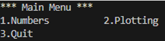

Module code.menus_creation
last update: 07/03/23
 Console menus creation
Console menus creation
1. Overview
The menus_creation folder contains a complete example on how to create a console
menu and submenus to select and execute code sample from a terminal windows.
[!NOTE] You can use the example as a template for the creation od your own menus and submenus. Below are the steps you cna follow.
The menus_creation is the main folder that contains the code to create the
main menus along with the samples to run. Specifically:
- The
main.pyallows for the creation of the main menu. This menu allows the user to select any of several group submenus. - The
code.menus_creation.number_playis the folder that contains number related samples. - The
code.menus_creation.plotting_awayis folder that contains plotting related samples. - The
submenus.pycontains the classSubMenusthat creates the various group menus (submenus). The class instance methodgroup_selection_submenudisplays a menu of available samples, for the user's selected group, and allows the user to select a sample to execute from that group.
2. Main menu
The steps to create menus are a bit cumbersome and interrelated. Also, we are
going to use decision tables and not switch statements. The best way to
demonstrate this is via an example by using the Menus Creation Group Menu in
the menus_creation folder.
2.1. Group menu
The main menu is created by the main.py file, that is the main
activation code for the menus_creation folder that contains all the
examples for this area. Below, we highlight the main steps.
2.1.1. __init__(self)
-
Define the choices of the main menu. Every choice represents a group of samplea.
python self.menu_choices = ["Numbers", "Plotting", "Quit"] -
Initialize menu name and choices through the
ConsoleMenuparent class``` python
super().__init__("Main Menu", self.menu_choices)```
This generates the followng menu:

-
Instantiate the
SubMenusclass. It contains the submenus and the logic to allow the user to select the desired sample.``` python
_amenu = _menu.BreadboardSubMenus()```
-
Define the decision table to select the submenus. The order must match the order of the
self.sub_menuslist incode/menus_creation/submenus.py.``` python
self.sub_menu = { 1: lambda: _submenus.group_selection_submenu(1), # Numbers 2: lambda: _submenus.group_selection_submenu(2), # Plotting }```
The previous sub_menu is a dictionary of key, value pairs.
The key is an
integer (from 1 to 2), the value is a lambda function which calls the
group_selection_menu menthod in the SubMenus class and
passes to it an integer (from 1 to 2) selected by the user and shown in this
call self.sub_menu[choice]().
2.1.2. group_selection_menu(self)
- Display the group menu by calling
display_menu()method in theConsoleMenuparent class. - Loop to get the user's choice by calling
get_user_choice()method in theConsoleMenu. - If the user select
Quitterminate the loop, otherwise display the submenu selected by the user.
2.1.3. About lambda
In Python, lambda is a keyword that is used to define small, anonymous
functions. The `lambda function can take any number of arguments, but can only
have one expression.
Notice the syntax self.sub_menu[choice]() with parenthesis (), allows the
lambda function evaluation, that is the call to group_selection_menu
menthod, only when the dictionary entry is selected by the user and not at the
time the dictionary is created.
2.2. Submenus
After the creation of the main menu, we can start creating submenus.
Each
submenu is activated by selecting one of the entries displayed in the group menu
described before. This is where the rubber hits the road. The main menu is
connected to the submenus whose entries in turn are connected toe the functions
(samples) to run. The key is the class SubMenus(ConsoleMenu).
Next we highlight the main steps.
2.2.1. __init__(self)
This function initializes the class SubMenus instance.
-
Define the menu entries for each sample group.
-
Choices for the Numbers group menu
python self.number_menu_choices = ["Fibonacci", "Numbers", "Quit"] -
Choices for the Plot group menu
python self.plot_menu_choices = ["Plot", "Quit"] -
Group all the sample menus. The order must match the order of the
self.menu_itemslist incode/menus_creation/main.py.``` python self.sub_menus = [ [], # Leave it empty to match dictionary keys. # This is because the start key is 1 in the related # selection table (dictionary)
sub_menudefined # in main.py.
self.number_menu_choices, # Value associated with key 1 self.plot_menu_choices # Value associated with key 2 ]```
-
Instanciate each sample class.
-
NumberSamplesinstancepython self.number_samples_instance = NumberSamples() -
PlotSamplesinstancepython self.plot_samples_instance = PlotSamples() -
Define the decision table for each sample group.
Each table (dictionary) entry contains a key, value pair. The key is an integer, the value is the sample instance and the method to call. Note the use of the `lambda' function needed to pass parameters to the function to call, when needed.
Numbersselection decision table
``` python
self.number_samples = { 1: ["\n*** Calculate Fibonacci ***", lambda: self.number_samples_instance.fiboTriangle(5)], 2: ["\n*** Get number types ***", self.number_samples_instance.getNumberTypes], }```
Plotselection decision table
``` python
self.plot_samples = { 1: ["\n*** Plotting ***", self.plot_samples_instance.plotting], }```
-
Group of all the sample decision tables
``` python
self.sample_groups = {
1: ["Numbers Samples", self.number_samples],
2: ["Plot Samples", self.plot_samples]
}
```
2.2.2. group_selection_submenu(self, sub_menu)
- Get the name of the sub menu selected by the user.
python
selected_menu_name = self.sample_groups[sub_menu][0]
- Get the selected sub menu.
python
selected_sub_menu_items = self.sub_menus[sub_menu]
- Initialize selected menu name and items through
ConsoleMenuparent class.
python
super().__init__(selected_menu_name, selected_sub_menu_items)
- Display the menu.
python
self.display_menu()
- Get the user's choice.
python
choice = self.get_user_choice()
- Get the selected list
python
_current_selection = self.sample_groups[sub_menu][1]
- Call the selectd sample function.
python
_current_selection[int(choice)][1]()
Expand source code
"""
.. include:: ./README.md
"""
"""
The landing page for your documentation is your project's top-level <folder
name>/__init__.py file. Adding a folder-level docstring here is a great way to
introduce users to your project.
"""Sub-modules
code.menus_creation.main-
Module main.py
code.menus_creation.number_playcode.menus_creation.plotting_awaycode.menus_creation.submenus-
Module menuscreation_submenus.py